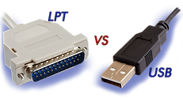
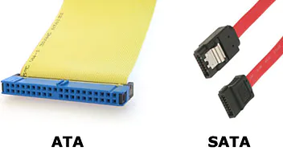
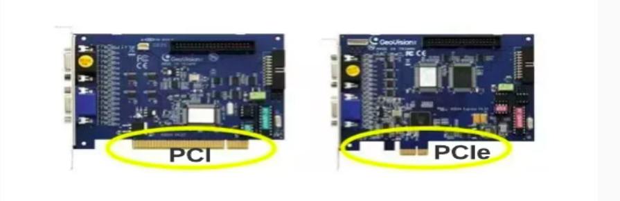
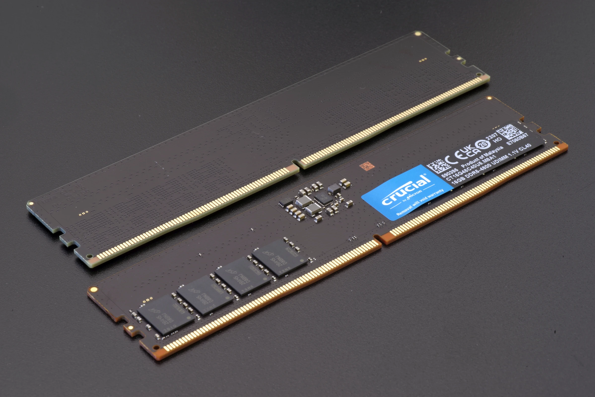
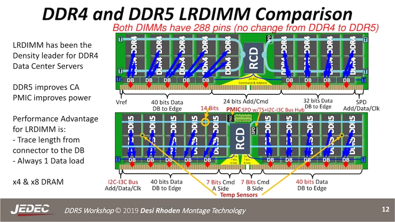
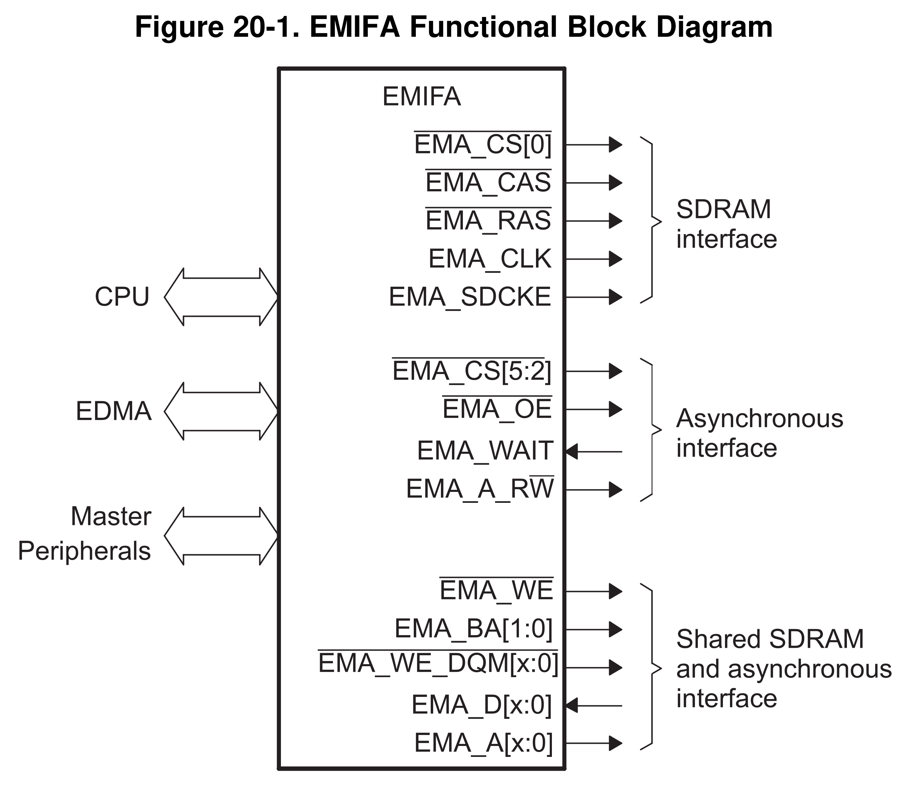

Magistrale komunikacyjne
Magistrale równoległe vs. szeregowe
Właściwości magistral równoległych
naturalne dla procesora
szybsze od szeregowych (przy tym samym taktowaniu)
wymagają wiele linii (miedź kosztuje!)
przy szybkich zegarach na długich liniach zniekształcają sygnał
Właściwości magistral szeregowych
wymagają peryferiałów tłumaczących je na magistrale równoległe
wolniejsze od równoległych (przy tym samym taktowaniu)
wymagają niewiele linii
możliwe jest stosowanie szybkich zegarów na długich liniach
Ewolucja magistral
LPT → USB

Ewolucja magistral
ATA → SATA

Ewolucja magistral
PCI → PCI-E
x1, x2, x4, x8, x16

Magistrale równoległe
Interfejsy pamięci RAM
DDR SDRAM 5 (
Double Data Rate Synchronous Dynamic Random-Access Memory 5
)
zegar do 3,2 GHz z aktywnymi dwoma zboczami
dwie szyny danych po 32 bity
\(B = 3{,}2\cdot10^9\text{Hz}\cdot2\cdot32\text{b}\cdot2\)
\(B = 3{,}2\cdot10^9\text{Hz}\cdot2\cdot32\text{b}\cdot2 = 409{,}6\text{Gb/s}\)



Interfejsy w systemach wbudowanych
pamięci RAM
pamięci flash
MII (
Media-Independent Interface
)
LCD